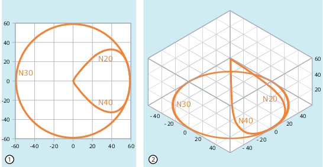

Mit den Befehlen der G-Gruppe 17 (NORM, KONT, KONTC oder KONTT) kann bei eingeschalteter Werkzeugradiuskorrektur (G41/G42) der An- und Abfahrweg des Werkzeugs an den gewünschten Konturverlauf oder an die Rohteilform angepasst werden.
Mit KONTC oder KONTT werden die Stetigkeitsbedingungen in allen drei Achsen eingehalten. Damit wird es zulässig, gleichzeitig eine Wegkomponente senkrecht zur Korrekturebene zu programmieren.
| Hinweis |
|
Um KONTC und KONTT nutzen zu können, ist eine Lizenz für die Option "Polynom-Interpolation" erforderlich. |
| G41/G42 NORM/KONT/KONTC/KONTT X... Y... Z... | |
| ... | |
| G40 X... Y... Z... |
| Direktes An-/Abfahren auf einer Geraden einschalten Das Werkzeug wird senkrecht zum Konturpunkt ausgerichtet. |
| An-/Abfahren mit Umfahren des Anfangs-/Endpunkts einschalten Das Werkzeug umfährt den Anfangspunkt je nach programmiertem Eckenverhalten (G450/G451) auf einer Kreisbahn oder über den Schnittpunkt der Äquidistanten. |
| Krümmungsstetiges An-/Abfahren einschalten Der Konturpunkt wird krümmungsstetig angefahren/verlassen. Am Konturpunkt tritt kein Beschleunigungssprung auf. |
| Tangentenstetiges An-/Abfahren einschalten Der Konturpunkt wird tangentenstetig angefahren/verlassen. Am Konturpunkt kann ein Beschleunigungssprung auftreten. |
| Hinweis |
Als Original-An-/Abfahrsätze für KONTC und KONTT sind nur G1-Sätze zulässig. Diese werden von der Steuerung durch Polynome für die entsprechende Anfahr-/Abfahrbahn ersetzt. |
KONTT und KONTC stehen bei den 3D-Varianten der Werkzeugradiuskorrektur (CUT3DC, CUT3DCC, CUT3DF) nicht zur Verfügung. Werden sie dennoch programmiert, wird steuerungsintern ohne Fehlermeldung auf NORM umgeschaltet.
Im folgenden Programmbeispiel wird ein Vollkreis mit dem Radius 70 mm in der X-Y-Ebene bearbeitet. Das An-/Abfahren des Werkzeugs erfolgt mit KONTC:
| Programmcode | Kommentar |
|---|---|
| $TC_DP1[1,1]=121 | ; Fräser |
| $TC_DP6[1,1]=10 | ; Radius 10 mm |
| N10 G1 X0 Y0 Z60 G64 T1 D1 F10000 | |
| N20 G41 KONTC X70 Y0 Z0 | ; Anfahren |
| N30 G2 I-70 | ; Vollkreis |
| N40 G40 G1 X0 Y0 Z60 | ; Abfahren |
| N50 M30 |
Da das Werkzeug einen Radius von 10 mm hat, ergibt sich als resultierende Werkzeugmittelpunktsbahn ein Kreis mit dem Radius 60 mm. Start- und Endpunkt liegen bei X0 Y0 Z60. Beim Anfahren an den Vollkreis mit KONTC (N20) wird die Krümmung an die Kreisbahn des Vollkreises angepasst. Gleichzeitig wird von Z60 auf die Ebene des Kreises Z0 verfahren. Das Abfahren (N40) erfolgt analog.
① | Senkrechte Projektion |
② | Räumliche Darstellung |
Werkzeugbahn
Siehe auch:
An-/Abfahrverhalten anpassen (NORM, KONT, KONTC, KONTT): Weitere Informationen
Werkzeugradiuskorrektur ein-/ausschalten (G40, G41, G42, OFFN)